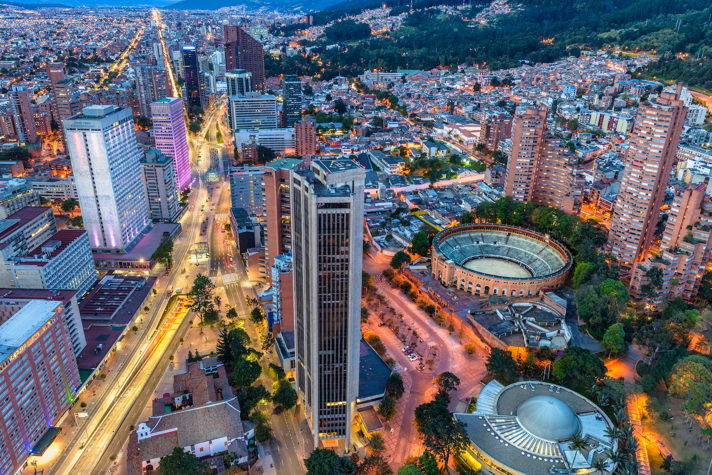

Bogota, Colombia
Bogota is the captical city of Colombia, in south america.
Bogotá is a territorial entity of the first order, with the same administrative status as the departments of Colombia.
Bogotá was founded as the capital of the New Kingdom of Granada on 6 August 1538 by Spanish conquistador Gonzalo Jiménez de Quesada after a harsh expedition into the Andes conquering the Muisca, the indigenous inhabitants of the Altiplano.
It was Simón Bolívar who rebaptized the city with the name of Bogotá, as a way of honoring the Muisca people and as an emancipation act towards the Spanish crown.
The city is located in the center of Colombia, on a high plateau known as the Bogotá savanna, part of the Altiplano Cundiboyacense located in the Eastern Cordillera of the Andes.
Español
Español, better known as Spanish, is the indigenous language of the people of Spain.
Spain, as a country, has invaded and colonized a number of countries in the past centuries,
and as such, their language has had a wide spread in those countries. Even adopted as a langugae of instruction in each respective country.
I got very interested in the language after having heard a few Colombian men speaking it here in Mthatha, and I had no idea what langugage it was.
It was just amazing to hear. So interupted them and I asked what language that was and where were they from. They were very nice an open.
Tried their best to explain things to me in English. I liked the language, and the country, ever since.
| Español |
English |
| Buenos días cómo estás? |
Good day how are you? |
| mucho gusto |
Nice to meet you |
| soy el mejor |
I'm the greatest |
| cordura sobre todo |
Sanity over everything |
| El mundo es tu ostra |
The world is your oyster |